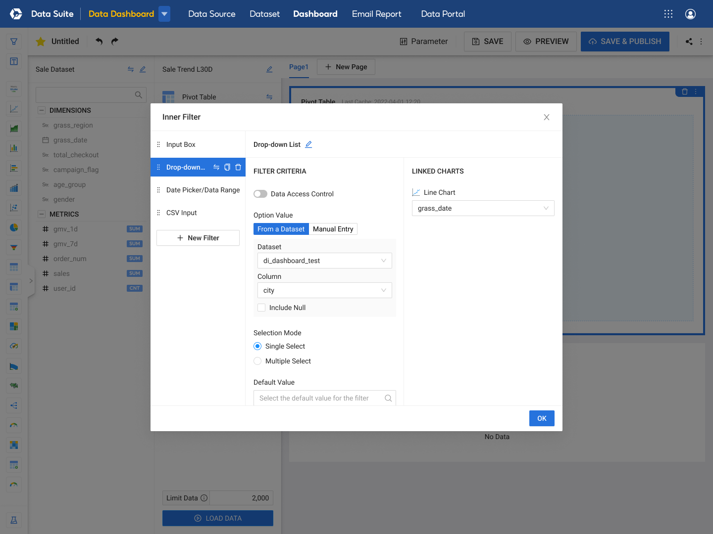

01 / Entering a mature platform
Starting from concrete work.
When I took over DataSuite, the platform already had a systematic set of products and interfaces; what it lacked was professional design support. My first job wasn't drawing pages — it was understanding what each person does: data engineers run tasks, analysts organize dashboards, business users need to find usable data, developers call data capabilities through APIs. The terms and operations on the page all grow out of these people's daily work.
I started from key products like DataGo: first untangle roles, permissions, tasks, and cross-product relationships — who's using it, what they can access, where they get stuck — then organize it into the interface. DataGo, Dashboard, Flink, and Data Service correspond to four jobs: pulling data, editing dashboards, tracking execution, and testing APIs. Below, in that order.
These designs happened under real inherited conditions: Data Infrastructure has its own teams and priorities, and different products keep different versions of components and custom implementations.
Blue ↗ expands the design case Gray other platform products
Data ingestion
Data from different sources lands in target storage
Exploration & development
Queries, scripts, pipelines, and real-time jobs
Operations assurance
Dependencies, instances, quality, timeliness, and disaster recovery
Assets & definitions
Discovery, metadata, lineage, and business definitions
Data consumption
Query, dashboard, API, and AI-analysis entry points
Specialized data forms
Lakehouse, graph data, and logs
Organization, resources & access
Org, teams, projects, resources, and access
Governance & shared support
Cost, collaboration, and shared support
- Producer view
- Ingest → develop → run and quality assurance. Data engineers focus on tasks, dependencies, resources, and running instances; batch and real-time have different execution logic.
- Consumer view
- Discover and understand → gain access → use by task. BI, analysts, business users, and app developers enter query, dashboard, or API workflows respectively.
02 / Pulling data and permissions
One query has to make clear where the data comes from, what you can access, and how to get it.
The core work in DataGo happens in the Query Console: pick a model, pick output columns, set filters, set sort and count — one query broken into consecutive, checkable steps. Below, the key pages by complexity.
Four key pages in the Query Console
Output columns
Columns expand by business category; selected ones gather below, reorderable.

Filters
Filter conditions and Access Limit, presented separately.

Permission-change notice
When a selected column loses access, the interface points out the affected fields.

In the filter area, two kinds of conditions look alike but mean completely different things: one is what this query wants to pull, the other is what Access Limit allows you to pull. I separated them — changing the filter can't expand permissions, and the interface has to make that boundary clear.
Before querying, know where the data comes from. Model Market finds the right data model, then confirms its fields and what you can access; My Access lists the row and column scope — know the starting point, and you know how far you can go.
Models and access scope

After the query is submitted, it isn't over. Job Center separates temporary queries from scheduled ones; a long-term task's configuration and one run's result can't sit in the same list.
03 / Editing and filtering
When editing a dashboard, you need to see the correspondence between config and chart.
Dashboard lets analysts organize data into dashboards. Editing a chart is a back-and-forth of choosing fields, configuring dimensions, and seeing the canvas result — the chart being edited and the config being changed must match. I put the chart tools, fields, config panel, and canvas into one editing environment, so the selected chart and the config being edited always correspond.

Filters involve how the dashboard is used: where the candidate values come from, what's selected by default, which charts they affect. Inline Filter's settings separate the control, the condition source, and the Linked Charts.

Where the control sits can't replace explaining its scope. Which chart and which field it links to must be clear at config time.
04 / Execution tracking
After triggering a pipeline, you need to trace which exact step went wrong.
Flink's Pipeline connects build artifacts, applications, and execution actions. One trigger involves multiple JARs and applications; overall status can't explain the execution — when something fails, you need to trace to the exact step.
Runtime relationship graph and the JAR process
Runtime relationship graph
Status marked on every node, from JAR to application, execution action, and environment.

Generate JARs
Generation and upload as two separate steps, each showing progress.

When one branch fails, you need to see where the failure happened, and how the other branches in the same run did. A Done on the record can still carry a failed node — 'finished overall' and 'all succeeded' are two different things.
Where to start tracing needs a trigger-record entry point; getting to the application itself needs environment, dimensions, current instances, and history. The execution record, the relationship graph, and the object detail each answer a different level of the question, and all map to the same piece of work.
Trigger records and application detail
Trigger record
Source branch, commit, trigger method, duration.

Application detail
Environment, dimensions, current instances, and history.

05 / API testing
Read an API, then know how to call it.
Developers use Data Service to call data capabilities as APIs. Before testing, find the API and read its parameters and return structure. Service API organizes APIs by service; the detail expands parameter type, location, required fields, and nesting.
Find the API, read the parameters

API Testing puts filling the request, viewing the response, and reading the docs in one workspace. Below, three pages by complexity.
Three pages in API Testing
Testing workspace
Request and result on the left, docs on the right; input defaults to Key-Value.

Input defaults to Key-Value; switch to JSON to see the full structure. Request settings are separated from business parameters, with SDK and cURL docs kept on the right. Fill while checking usage, verify against the response while checking — all around the current API, continuously. The scope of the test result also has to be stated: this version notes that online debugging returns only the first 100 rows for reference — developers need to know both how to make a request and what the result in front of them actually says.
06 / Inherited constraints and continuity
Under inherited constraints, a foundation others can keep building.
I first built the design foundation in the key products, brought in new assets and practices as new requests came, then let designers carry the business understanding forward. InfraD provided reusable capability, but DataSuite never completed full platform unification — some inherited pages keep their original implementation. For a mature platform like this, design's value has to land on concrete work: the person querying understands permissions, the person editing a dashboard controls the filter scope, the person troubleshooting finds the failed step, the person calling an API reads the request and result — untangle these relationships, and the designers who take over have a rationale to keep building.
Some files reference internal company information; they can be discussed in an interview with sanitized material.